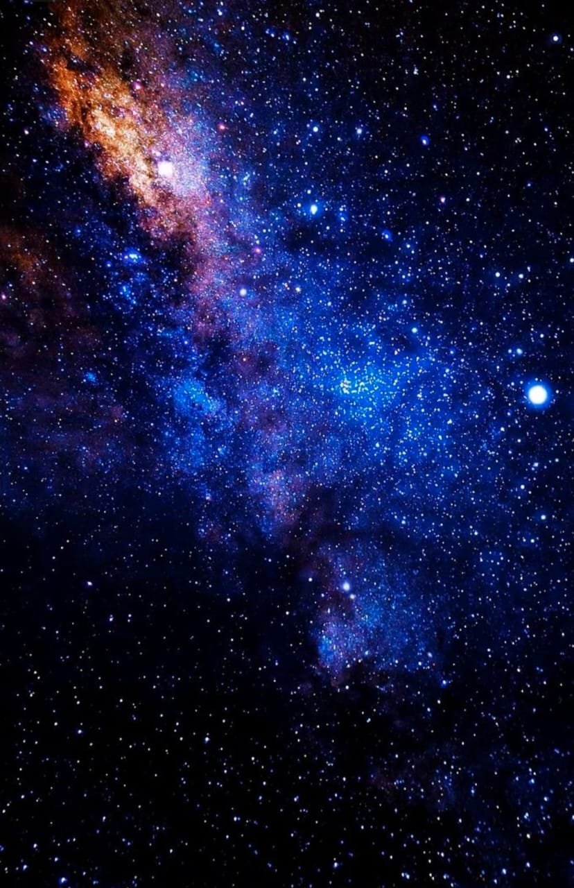

Las estrellas tambien tienen un ciclo de vida y no brillan para siempre.
Cuando una estrella agota su combustible, comienza a cambiar y puede llegar al final de su vida.
Algunas estrellas se convierten en enanas blancas y otras pueden formar estrellas de neutrones.
Las estrellas mas grandes pueden terminar formando agujeros negros.
Sus restos ayudan a formar nuevos elementos en el universo.